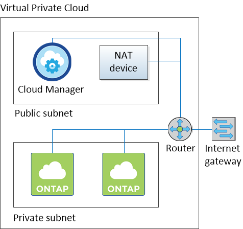

版本資訊
版本資訊
AWS 的網路需求 Cloud Volumes ONTAP
 建議變更
建議變更
設定 AWS 網路功能、 Cloud Volumes ONTAP 讓各個系統正常運作。
一般AWS網路需求Cloud Volumes ONTAP
AWS 必須符合下列要求。
- 對節點的輸出網際網路存取 Cloud Volumes ONTAP
-
支援不需透過外部網際網路存取、即可將訊息傳送至 NetApp 解決方案、以主動監控儲存設備的健全狀況。 Cloud Volumes ONTAP AutoSupport
路由和防火牆原則必須允許 AWS HTTP / HTTPS 流量傳輸至下列端點、 Cloud Volumes ONTAP 才能讓下列端點傳送 AutoSupport 動態訊息：
-
https://support.netapp.com/aods/asupmessage
-
https://support.netapp.com/asupprod/post/1.0/postAsup
如果您有 NAT 執行個體、則必須定義傳入安全性群組規則、以允許 HTTPS 流量從私有子網路傳入網際網路。
-
- HA 中介器的傳出網際網路存取
-
HA 中介執行個體必須具有 AWS EC2 服務的傳出連線、才能協助進行儲存容錯移轉。若要提供連線、您可以新增公用 IP 位址、指定 Proxy 伺服器或使用手動選項。
手動選項可以是從目標子網路到 AWS EC2 服務的 NAT 閘道或介面 VPC 端點。如需 VPC 端點的詳細資訊、請參閱 "AWS 文件：介面 VPC 端點（ AWS Private Link ）"。
- IP 位址數
-
Cloud Manager 會在 Cloud Volumes ONTAP AWS 中配置下列數量的 IP 位址給功能不全：
-
單一節點： 6 個 IP 位址
-
HA 配對單一 AZs ： 15 個位址
-
多個 AZs 中的 HA 配對： 15 或 16 個 IP 位址
請注意、 Cloud Manager 會在單一節點系統上建立 SVM 管理 LIF 、但不會在單一 AZ 的 HA 配對上建立。您可以選擇是否在多個 AZs 的 HA 配對上建立 SVM 管理 LIF 。

LIF 是與實體連接埠相關聯的 IP 位址。諸如 VMware 的管理工具需要 SVM 管理 LIF SnapCenter 。
-
- 安全性群組
-
您不需要建立安全性群組、因為 Cloud Manager 會為您建立安全性群組。如果您需要使用自己的、請參閱 "安全性群組規則"。
- 從 Cloud Volumes ONTAP 支援資料分層的功能、從功能鏈接至 AWS S3
-
如果您想要將 EBS 當作效能層、將 AWS S3 當作容量層、您必須確保 Cloud Volumes ONTAP 將該連接到 S3 。提供此連線的最佳方法是建立 VPC 端點至 S3 服務。如需相關指示、請參閱 "AWS 文件：建立閘道端點"。
當您建立 VPC 端點時、請務必選取與 Cloud Volumes ONTAP 該實例相對應的區域、 VPC 和路由表。您也必須修改安全性群組、以新增允許流量到 S3 端點的傳出 HTTPS 規則。否則 Cloud Volumes ONTAP 、無法連線至 S3 服務。
如果您遇到任何問題、請參閱 "AWS 支援知識中心：為什麼我無法使用閘道 VPC 端點連線至 S3 儲存區？"
- 連線 ONTAP 至其他網路中的不二系統
-
若要在 Cloud Volumes ONTAP AWS 系統和 ONTAP 其他網路中的更新系統之間複寫資料、您必須在 AWS VPC 和其他網路之間建立 VPN 連線、例如 Azure vnet 或公司網路。如需相關指示、請參閱 "AWS 文件：設定 AWS VPN 連線"。
- 適用於 CIFS 的 DNS 和 Active Directory
-
如果您想要配置 CIFS 儲存設備、則必須在 AWS 中設定 DNS 和 Active Directory 、或將內部部署設定延伸至 AWS 。
DNS 伺服器必須為 Active Directory 環境提供名稱解析服務。您可以將 DHCP 選項集設定為使用預設 EC2 DNS 伺服器、此伺服器不得是 Active Directory 環境所使用的 DNS 伺服器。
AWS 在 Cloud Volumes ONTAP 多個 AZs 中的功能需求
其他 AWS 網路需求適用於 Cloud Volumes ONTAP 使用多個可用區域（ AZs ）的 SestHA 組態。在啟動 HA 配對之前、您應該先檢閱這些需求、因為您必須在 Cloud Manager 中輸入網路詳細資料。
若要瞭解 HA 配對的運作方式、請參閱 "高可用度配對"。
- 可用度區域
-
此 HA 部署模式使用多個 AZs 來確保資料的高可用度。您應該使用專屬的 AZ 來處理每 Cloud Volumes ONTAP 個實例、並使用中介執行個體、以提供 HA 配對之間的通訊通道。
- 用於 NAS 資料和叢集 / SVM 管理的浮動 IP 位址
-
多個 AZs 中的 HA 組態會使用浮動 IP 位址、在發生故障時在節點之間移轉。除非您的選擇、否則無法從 VPC 外部原生存取 "設定 AWS 傳輸閘道"。
一個浮動 IP 位址是用於叢集管理、一個用於節點 1 上的 NFS/CIFS 資料、另一個用於節點 2 上的 NFS/CIFS 資料。SVM 管理的第四個浮動 IP 位址為選用項目。

如果您使用 SnapDrive 適用於 Windows 的 SHIP 或 SnapCenter 搭配 HA 配對的 SHIP 、則 SVM 管理 LIF 需要一個浮動 IP 位址。如果您在部署系統時未指定 IP 位址、您可以稍後建立 LIF 。如需詳細資訊、請參閱 "設定 Cloud Volumes ONTAP 功能"。 當您建立 Cloud Volumes ONTAP 一個發揮作用的環境時、需要在 Cloud Manager 中輸入浮動 IP 位址。Cloud Manager 會在 HA 配對啟動系統時、將 IP 位址分配給 HA 配對。
在部署 HA 組態的 AWS 區域中、所有 VPC 的浮動 IP 位址都必須位於 CIDR 區塊之外。將浮動 IP 位址視為位於您所在地區 VPC 外部的邏輯子網路。
下列範例顯示 AWS 區域中浮動 IP 位址與 VPC 之間的關係。雖然浮動 IP 位址位於所有 VPC 的 CIDR 區塊之外、但仍可透過路由表路由傳送至子網路。

Cloud Manager 會自動建立靜態 IP 位址、以供 iSCSI 存取及從 VPC 外部用戶端存取 NAS 。您不需要滿足這些類型 IP 位址的任何需求。 - 傳輸閘道、可從 VPC 外部啟用浮動 IP 存取
-
"設定 AWS 傳輸閘道" 可從 HA 配對所在的 VPC 外部存取 HA 配對的浮動 IP 位址。
- 路由表
-
在 Cloud Manager 中指定浮動 IP 位址之後、您必須選取路由表、其中應包含通往浮動 IP 位址的路由。這可讓用戶端存取 HA 配對。
如果 VPC 中只有一個子網路路由表（主路由表）、 Cloud Manager 會自動將浮動 IP 位址新增至該路由表。如果您有多個路由表、在啟動 HA 配對時、請務必選取正確的路由表。否則、部分用戶端可能無法存取 Cloud Volumes ONTAP 功能不完全。
例如、您可能有兩個子網路與不同的路由表相關聯。如果您選取路由表 A 而非路由表 B 、則與路由表 A 相關聯的子網路中的用戶端可以存取 HA 配對、但與路由表 B 相關的子網路中的用戶端則無法存取。
如需路由表的詳細資訊、請參閱 "AWS 文件：路由表"。
- 連線至 NetApp 管理工具
-
若要將 NetApp 管理工具搭配多個 AZs 中的 HA 組態使用、您有兩種連線選項：
-
在不同的 VPC 和中部署 NetApp 管理工具 "設定 AWS 傳輸閘道"。閘道可讓您從 VPC 外部存取叢集管理介面的浮動 IP 位址。
-
在與 NAS 用戶端相同的 VPC 中部署 NetApp 管理工具、其路由組態與 NAS 用戶端相似。
-
組態範例
下圖顯示 AWS 以主動 - 被動式組態運作時的最佳 HA 組態：

VPC組態範例
若要更深入瞭Cloud Volumes ONTAP 解如何在AWS中部署Cloud Manager和功能、您應該檢閱最常見的VPC組態。
-
具有公有和私有子網路及NAT裝置的VPC
-
具有私有子網路和VPN連線的VPC、可連線至您的網路
具有公有和私有子網路及NAT裝置的VPC
此VPC組態包括公有和私有子網路、將VPC連接至網際網路的網際網路閘道、以及在公有子網路中啟用傳出網際網路流量的NAT閘道或NAT執行個體。在此組態中、您可以在公有子網路或私有子網路中執行Cloud Manager、但建議使用公有子網路、因為它允許從VPC以外的主機存取。然後、您可以在Cloud Volumes ONTAP 私有子網路中啟動執行個體。
|
|
您可以使用HTTP Proxy來提供網際網路連線功能、而非使用NAT裝置。 |
如需此案例的詳細資訊、請參閱 "AWS文件：情境2：VPC搭配公有和私有子網路（NAT）"。
下圖顯示在公有子網路中執行的Cloud Manager、以及在私有子網路中執行的單一節點系統：

具有私有子網路和VPN連線的VPC、可連線至您的網路
這種VPC組態是混合雲組態、Cloud Volumes ONTAP 其中的功能是將效能提升到私有環境的延伸。此組態包括私有子網路和虛擬私有閘道、並可透過VPN連線至您的網路。透過VPN通道路由可讓EC2執行個體透過網路和防火牆存取網際網路。您可以在私有子網路或資料中心執行Cloud Manager。接著您會在Cloud Volumes ONTAP 私有子網路中啟動效能不均。
|
|
您也可以在此組態中使用Proxy伺服器來允許網際網路存取。Proxy伺服器可以位於您的資料中心或AWS中。 |
如果您想要在FAS 資料中心的支援系統和Cloud Volumes ONTAP AWS的支援系統之間複寫資料、您應該使用VPN連線、以確保連結安全無虞。
如需此案例的詳細資訊、請參閱 "AWS文件：案例4：VPC僅含私有子網路和AWS託管VPN存取"。
下圖顯示在資料中心執行的Cloud Manager、以及在私有子網路中執行的單一節點系統：